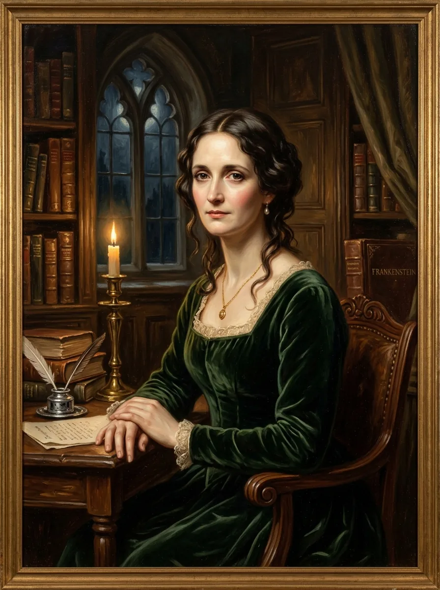

مری شلی
Mary Wollstonecraft Godwin Shelley
نابغه ادبیات رمانتیک و آفریننده شاهکار ماندگار فرانکنشتاین؛ نویسندهای که تروماهای مکرر زایمان، فقدان و اندوه عمیق مرگ فرزندان و همسر را به غنیترین نماد فلسفی مدرنیته پیوند زد.
«بر حذر باش؛ زیرا من بیمی به دل راه نمیدهم و از این رو قدرتمندم.»
این سخن متعلق به کاراکتر هیولاست و نباید کلام خود مری شلی تلقی شود، گرچه بازتاب دغدغه قدرت و رهایی در اثر اوست.
۰۱
آنچه کرد (کارنامه تاریخی مستند)
۱۸۱۶ م.
تابستان ویلا دیوداتی در ژنو با بایرون و پرسی شلی؛ نگارش رمان فرانکنشتاین در سن ۱۸ سالگی.
۱۸۲۲ م.
غرق شدن پرسی شلی در خلیج اسپتزیا؛ مری تنها بازمانده خانواده به لندن بازمیگردد و سرپرستی انحصاری ویرایش آثار او را به دست میگیرد.
۰۲
آنچه نامیده شد (تحلیل و نقد برچسبها)
زن سودازده و تسخیرشده توسط تاریکی
✎ قرائت جایگزین و نقد تاریخنگاری
جامعه ویکتوریایی تمایل داشت تخیل جسورانه و سیاه یک دختر جوان را نوعی اختلال روحی بداند تا نبوغ عقلانی و نقد تکنولوژی.
۰۳
خوانش شخصیت (غیرتشخیصی)
توجه علمی: این یک تشخیص نیست. بدون مصاحبه بالینی معتبر، تشخیص گذشتهنگر از نظر معرفتشناسی روانپزشکی ناممکن است. آنچه میخوانید تفسیری غیرتشخیصی از رفتارهای مستند بر اساس تاریخ مستند و روانشناسی مدرن است.
مری شلی شخصیتی تابآور در برابر تلخترین سوگهای زندگی بود. رمان او فراتر از یک داستان وحشت، نخستین رمان علمی-تخیلی بشر و هشداری اخلاقی درباره علم بدون مسئولیتپذیری به شمار میرود. او به جای تسلیم در برابر افسردگی، با نوشتن امر فاجعه را به اثر هنری جاودان بدل کرد.
۰۴
اسناد و منابع پژوهشی
- [منبع پژوهشی] Gordon, Charlotte. Romantic Outlaws: The Extraordinary Lives of Mary Wollstonecraft & Mary Shelley. Random House, 2015.
- [منبع پژوهشی] Seymour, Miranda. Mary Shelley. John Murray, 2000.